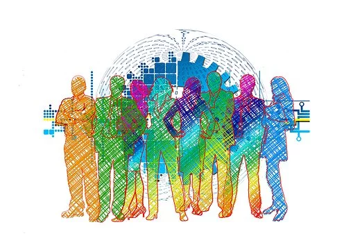

¿Es necesaria la transformación digital?
Para una organización conservar la competitividad en el mercado mundial es de vital importancia y para ello debe ser capaz de adaptarse a las nuevas tecnologías de forma rápida y eficiente, cabe destacar que este proceso de adaptación y aplicación de la transformación digital debe ocurrir de forma incremental tomando en cuenta las capacidades de las personas y las organizaciones.
Imaginar un mundo donde las grandes empresas no se adaptarán a la transformación digital, que la banca no tuviera servicios en línea o que no existieran monederos para dispositivos móviles, es algo impensable. La existencia de los productos y servicios que se usan en la actualidad se deben a que los directivos de las compañías escucharon las necesidades de sus clientes e incluso se adelantaron a ellas.
Por ejemplo, los buscadores por voz que se utilizan en los dispositivos móviles eran una necesidad y las compañías de desarrollo de software se adelantaron a que el cliente solicitara el producto.
La innovación tecnológica al usar inteligencia artificial, reconocimiento facial, reconocimiento por voz y reconocimiento dactilar son una realidad en nuestra actualidad, pero se está desarrollando tecnología de realidad aumentada, es decir, las empresas se están adelantando y adaptando al mercado y sus cambios.
Todo esto implica transformación digital, por eso es más que necesaria pues de otra forma muchísimas compañías no podrían seguir prestando sus productos o servicios pues al no estar a la par de los cambios y necesidades del mercado y los clientes, las compañías desaparecerían.
Proporcionar productos y servicios que satisfagan las necesidades de los clientes es una necesidad si las empresas se quieren mantener en el mercado mundial, para ello se debe fomentar competencias digitales en los empleados de las compañías entre las habilidades que deben adquirir están la capacidad de autoaprendizaje, trabajo colaborativo, comunicación entre todas las partes (clientes, proveedores, compañeros, directivos)
¿Ves ahora la importancia de transformarse digitalmente?

El Futuro es Ahora